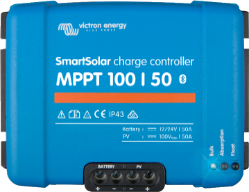
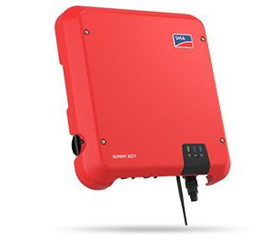
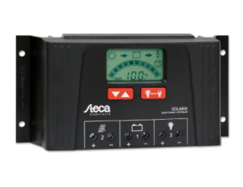

Victron SmartSolar MPPT 100-50 12V 24V charge controller

A solar charger gathers energy from your solar panels, and stores it in your batteries.
Using the latest, fastest technology, SmartSolar maximises this energy-harvest, driving it
intelligently to achieve full charge in the shortest possible time.
SmartSolar maintains battery health, extending its life.
The SmartSolar charge controller will even recharge a severely depleted battery.
It can operate with a battery voltage as low as 0 Volts, provided the cells are not
permanently sulphated or otherwise damaged.
Read
more here
SMA SB3.6 Solar panels inverter 1 phase

Established product features and integrated software solutions will provide yield
optimization throughout the system’s entire service life.
Even in shading. SMA ShadeFix is a proprietary inverter software that optimizes
energy yield
in nearly every situation.
SMA Smart Connected inverter monitoring offers enhanced safety by detecting errors
at an
early stage and automatically reporting them to the installer.
Read
more here
Victron 175Wp 12Volt Solar panel set

Solar charge controllers Steca Solarix 2525 and 4040 are newly developed products
based on
the internationally renowned controller family Steca PR.
With increased module and load current, the controllers are now also suitable for even
larger systems.
The devices also feature an integrated USB charging port for charging smartphones and
tablets.
Use of the latest charging technologies combined with state of charge determination enable
optimal battery maintenance and module power monitoring.
A large display informs the user about all operating modes with the aid of symbols.
The state of charge is represented visually as a level meter. Data such as voltage, current
and state of charge can also be displayed digitally as figures on the display.
In addition, the controller has an energy meter which can be reset by the user.
Read more
here